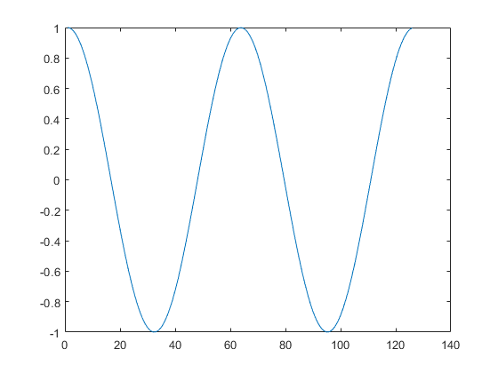
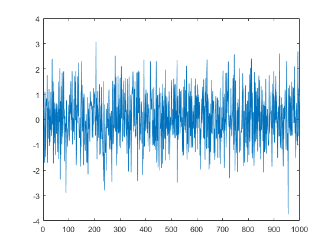
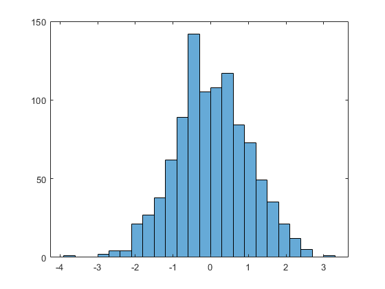

Contents
Tutorial 1
by Edward Fine
close all;
Basic MATLAB matrix operations
This section show basic matlab operations
A = [1 2 3; 4 5 6; 7 8 9] a = A(2,:) b = A(:,3) c = A(1,1:3)
A =
1 2 3
4 5 6
7 8 9
a =
4 5 6
b =
3
6
9
c =
1 2 3
Basic Plotting
Introduction to the plot command
t = 0:0.1:4*pi;
y = cos(t);
figure('Color', [1 1 1]);
plot(y)
 Basic Functions
Introduction to basic MATLAB functions
size(A) size(b) length(c) who whos
ans =
3 3
ans =
3 1
ans =
3
Your variables are:
A a ans b c m ma mi t u x y
Name Size Bytes Class Attributes
A 3x3 72 double
a 1x3 24 double
ans 1x1 8 double
b 3x1 24 double
c 1x3 24 double
m 1x1 8 double
ma 1x3 24 double
mi 1x3 24 double
t 1x126 1008 double
u 1x1 8 double
x 1000x1 8000 double
y 1x126 1008 double
Basic Statistics Functions
Introduction to statistics functions
ma = max(A) mi = min(A) u = mean(y) m = median(y) x = randn(1000, 1); figure('Color', [1 1 1]); plot(x) figure('Color', [1 1 1]); histogram(x) mean(x) std(x)
ma =
7 8 9
mi =
1 2 3
u =
0.0027
m =
-0.0040
ans =
0.0399
ans =
0.9785
 